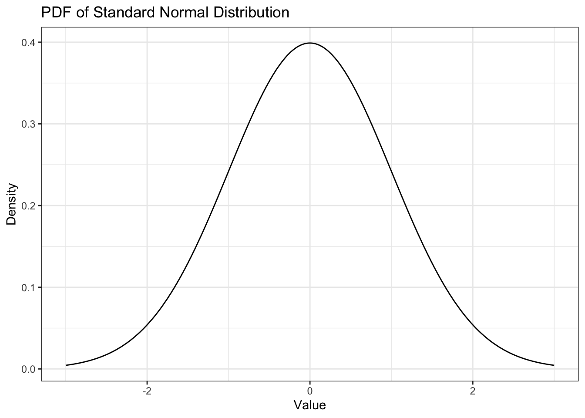

6 Стандартизация
Полезная вещь.
6.1 Стандартное нормальное распределение
Есть одно нормальное распределение, которые выделяется среди остальных — это нормальное распределение со средним \(0\) и дисперсией (стандартным отклонение) \(1\). Оно называется \(z\)-распределение, а значения на шкале такого распределния называются \(z\)-значениями.
\[ z \sim \mathcal{N}(0,\, 1) \]
Выглядит оно так:
Разумеется, так как стандартное нормальное распределение является частным случаем нормального распредления, оно сохраняет все его свойства.
6.2 Стандартизация
Часто возникает следующая задача: нам нужно сравнить, например, баллы по двум шкалам опросника, при этом размах баллов на шкале различный. Более того, сами распределения баллов по этим шкалам могут быть также различны.
Рассмотрим пример. Есть опросник «Trust in Artificial Intelligent Agents», который состоит из шести шкал — predictability, consistency, utility, faith, dependability и understanding. Возьмем две шкалы: predictability и understanding. Посмотрим, сколько вопросов вошло в каждую из шкал:
length(pr_items)## [1] 10length(un_items)## [1] 12Видим, что в шкале predictability 10 вопросов, а в шкале understanding 12. Понятно, что размах двух величин разный — сравнивать просто сырые баллы респондентов по двум шкалам друг с другом уже не выглядит осмысленно.
Посмотрим на распределения:
Видим, что разброс переменных разный, средние тоже разные — короче, все разное. Однако сравнивать каким-то образом хоцца. Для этого придумали стандартизацию.
Стандартизация — это такое преобразование исходной переменной, после которого среднее по переменной становится равно \(0\), а стандартное отклонение — \(1\). Таким образом, величина приводится к \(z\)-значениям.
Выполняется оно следующим образом:
\[ z = \frac{x - \bar x}{s}, \]
где \(x\) — значение исходной случайное величины, \(\bar x\) — выборочное среднее, \(s\) — выборочное стандартное отклонение.
Стандартизация состоит из двух операций:
- центрирование — то, что происходит в числителе,
- нормирование — то, что происходит в знаменателе.
Посмотрим на две операции отдельно на примере стандартизации какого-то нормального распределения.

На рисунке черной линией представлено исходное нормальное распределение \(\mathcal{N}(-0.5, 0.25)\). Если его центрировать, то оно подвинется вправо — \(x - \bar x\) — и получится синее распределение \(\mathcal{N}(0, 0.25)\). Если нормировать исходное распределение, то оно станет несколько шире — \(\dfrac{x}{s}\) — как зеленое \(\mathcal{N}(-0.5, 1)\). А если осуществить обе операции вместе — \(\dfrac{x - \bar x}{s}\) — это и будет стандартизация, и распределение совпадет с красным (стандартным нормальным распределением).
Важный момент: если распределение изначально было асимметричное, или бимодальное, или какое-либо еще «ненормальное», стандартизация не изменит его форму.
Например, вот.
Гистрограмма, конечно, изменилась существенно, но она имеет на это право, так как достаточно сильно чувствительна ко всяким случайным флуктуациям. А вот на графике плотности хорошо видно, что хотя распределение стало чуть шире и сдвинулось влево, форма распределения осталась прежней — есть два пика, есть хвостик справа.
А что же со шкалами опросника? Давайте стандартизируем:
Первое, что бросается в глаза — форма распределения, ну, прямо идентична [между стандартизированными и нестандартизированными величинами]. Шкалы исходных величин были различны [левые графики], шкалы стандартизированных величин — одинаковые [правые графики]. Обратите внимание на ось \(x\).
6.3 Интерпретация z-значений
Ну, хорошо, стандартизацию мы сделали — это не то чтобы очень сложно. Но как с этими числами дальше работать?
Здесь надо понять всего одну вещь: единица z-шкалы — это стандартное отклонение исходной переменной.
Конечно, z-шкала безразмерная, то есть не имеет единиц измерения (метры, секунды, года и др.). Однако единица — в смысле \(1\) — на этой шкале небессмысленна. Это мера типичности.
Посмотрим еще раз на картинку:

Обратим внимание вот на что: \(1\), \(2\), \(3\) и \(-1\), \(-2\), \(-3\) находятся в тех самых точках, где у нас в другом нормальной распределении стандартные отклонения (\(\sigma\), \(2\sigma\), \(3\sigma\)). А мы помним вот что:
- \(\mathrm{P} \big( X \in (\mu - \sigma, \, \mu + \sigma) \big) = 68.2\%\)
- \(\mathrm{P} \big( X \in (\mu - 2\sigma, \, \mu + 2\sigma) \big) = 95.6\%\)
- \(\mathrm{P} \big( X \in (\mu - 3\sigma, \, \mu + 3\sigma) \big) = 99.8\%\)
То есть z-значения в интервале \((-1, \, 1)\) — очень типичные, в интервалах \((-2, \, -1)\) и \((1, \, 2)\) — тоже достаточно типичные, в интервалах \((-3, \, -2)\) и \((2, \, 3)\) — менее типичные, но еще «нормальные», меньше \(-3\) и больше \(3\) — очень нетипичные. Это и есть мера типичности.
Таким образом, с помощью z-значений мы можем понять, где находится наш испытуемый / респондент на нашем распределении.
Можно ли это понять без перевода значений в z-шкалу? Можно. Но неудобно. Надо держать в голове среднее, стандартное отклонение конкретного распределения, а если сравниваем респондентов по нескольким шкалам, то по две характеристики для каждой шкалы — в общем, много инфы. Трудно. А по z-значениям все сразу понятно.
Есть еще одно применение z-значений. От них можно перейти к значениям любой стандартной шкалы. Стандартных шкал существует много — Sten, Stanine, T-score, IQ-score… С ними вы познакомитесь в курсе психометрики. Они очень удобны для представления результатов тестов конечным пользователям. Однако для того, чтобы перейти к этим шкалам, сначала необходимо будет все равно перейти к z-значениям.